5.4.2. Методы дискретного логарифмирования
5.4.2. Методы дискретного логарифмирования
Задача дискретного логарифмирования это задача обращения функции вида 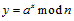. Существует также задача дискретного логарифмирования в других конечных группах − например, в группе точек эллиптической кривой.
Пусть G мультипликативная циклическая группа, порожденная элементом a по модулю n, тогда задача дискретного логарифмирования заключается в нахождении числа x такого, что  , где 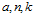 известные целочисленные величины величины. При этом должен являться первообразным корнем группы по модулю n, т. е. при возведении во все возможные степени получаются все возможные значения от 1 до n−1. В случае, когда x и n большие числа (порядка 1024 бит), задача дискретного логарифмирования не имеет эффективных способов решения. Решение этой задачи переборными методами имеет экспоненциальную сложность, тогда как лучшие методы имеют имеют субэкспоненциальную сложность решения. Лучший метод «решета числового поля» имеет сложность 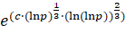 арифметических операций, что сравнимо со сложностью лучших алгоритмов разложения чисел на множители.
, где 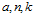 известные целочисленные величины величины. При этом должен являться первообразным корнем группы по модулю n, т. е. при возведении во все возможные степени получаются все возможные значения от 1 до n−1. В случае, когда x и n большие числа (порядка 1024 бит), задача дискретного логарифмирования не имеет эффективных способов решения. Решение этой задачи переборными методами имеет экспоненциальную сложность, тогда как лучшие методы имеют имеют субэкспоненциальную сложность решения. Лучший метод «решета числового поля» имеет сложность 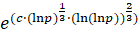 арифметических операций, что сравнимо со сложностью лучших алгоритмов разложения чисел на множители.
Если в общем случае решить задачу очень сложно, то для некоторых частных случаев это может быть сделано значительно проще. Классификация методов дискретного логарифмирования представлена на рис. 5.13.
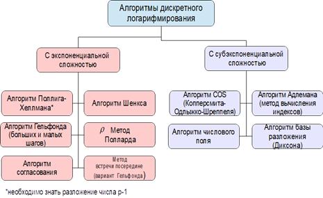 |
Рис. 5.13. Классификация методов дискретного логарифмирования |
На задаче дискретного логарифмирования основаны криптосистема Эль-Гамаля, алгоритм Эль-Гамаля в группе точек эллиптической кривой, алгоритмы ЭЦП, поэтому решение этой задачи является актуальной проблемой.
Рассмотрим классификацию методов решения задачи дискретного логарифмирования.
Очевидно, что как и в задаче факторизации, полиномиальные алгоритмы решения задачи дискретного логарифмирования отсутствуют.
Алгоритм Шенкса (больших и малых шагов)
Метод больших и малых шагов успешно работает только для n небольшого размера и требует 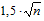 до 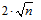операций. Алгоритм Шенкса основан на оптимальном соотношении времени и памяти, по сравнению с полным перебором. Пусть задан генератор группы a, модуль n и элемент группы k. Требуется найти решение уравнения 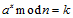.
Представим x в виде
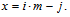
Здесь 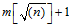, 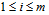 и 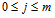.
Это представление соответствует равенству. Алгоритм предварительно вычисляет все 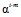, далее он перебирает все возможные значения j и проверяет, если 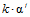 равно одному из сохраненных значений, то индексы i, j подставляются в формулу 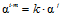 и позволяют вычислить 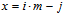 .
Пример
Пусть 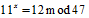.
Тогда найдем 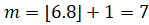.
Далее составим табл. 5.6.
Таблица 5.6
Результаты предвычислений
i |
1 |
2 |
3 |
4 |
5 |
6 |
7 |
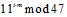 |
31 |
21 |
40 |
18 |
41 |
2 |
15 |
Подбираем j такое, что 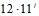 есть в табл. 5.7.
Таблица 5.7
Значения 
j |
1 |
2 |
3 |
4 |
5 |
6 |
7 |
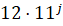 |
38 |
42 |
39 |
6 |
19 |
21 |
43 |
Результат: 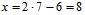.
Алгоритм Поллига − Хеллмана
Пусть известно разложение числа n−1 на простые множители 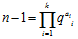, введем 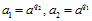 и пусть 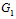 − множество образуемое элементом 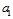 по модулю n и 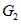 − множество образуемое элементом 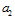 по модулю n , тогда мощность множества 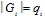. Будем искать решение уравнения 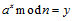 в виде 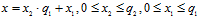.
Если 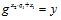, то 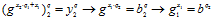.
Поэтому логарифмирование можно выполнить следующим образом:
1. Найти 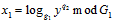;
2. Найти 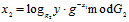;
3. Определить 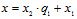.
Таким образом для дискретного логарифмирования в G требуется выполнить логарифмирование в группах 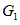 и меньшего порядка.
Далее если  является не простым числом, то можно снова заменить логарифмирование в группе
является не простым числом, то можно снова заменить логарифмирование в группе  на логарифмирование в меньших группах и т. д.
на логарифмирование в меньших группах и т. д.